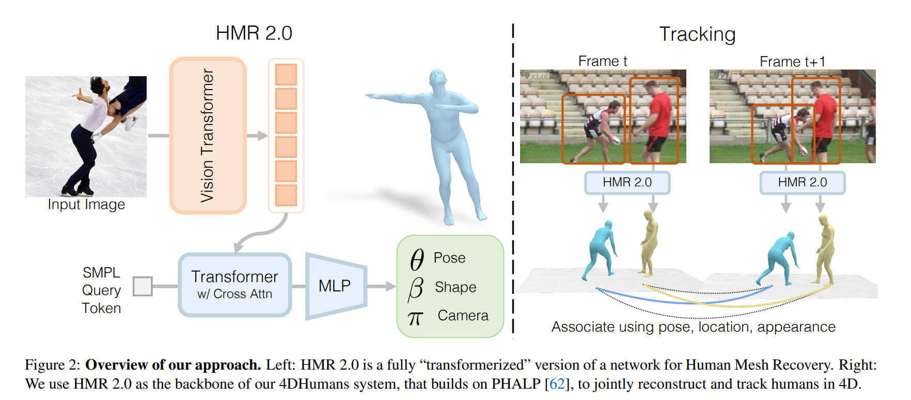
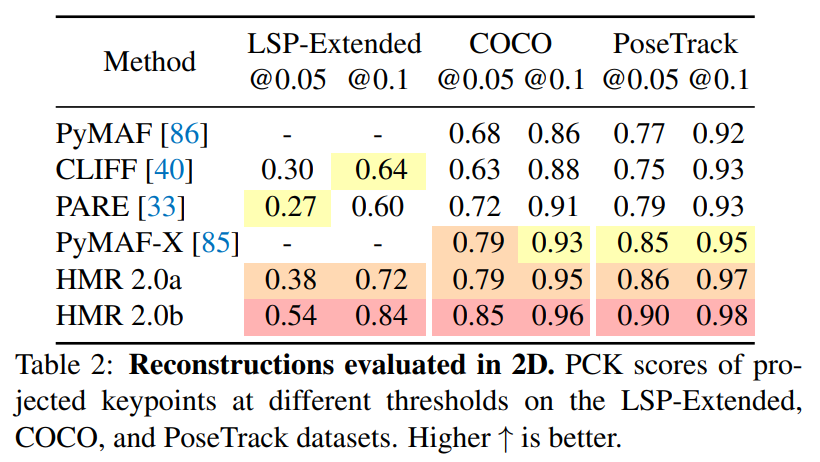
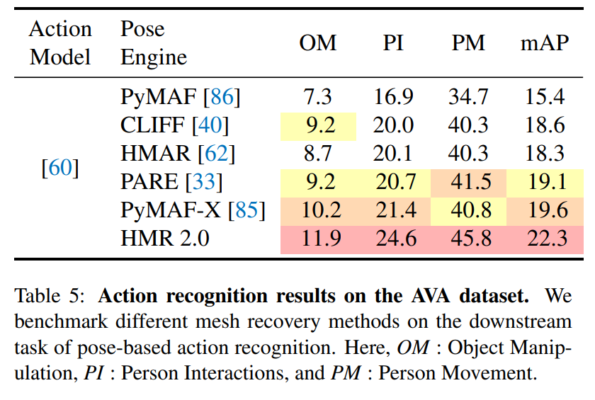
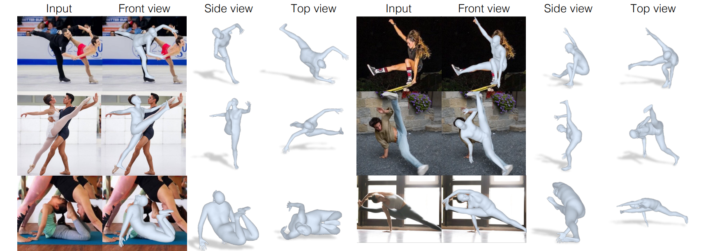

Citation
You can download the original paper and source of all images here.
Goel, S., Pavlakos, G., Rajasegaran, J., Kanazawa, A., & Malik, J. (2023). Humans in 4D: Reconstructing and Tracking Humans with Transformers. arXiv preprint arXiv:2305.20091.
Introduction
This paper seeked to improve on the performance of existing pose estimation, tracking, and action recognition models. The proposed model works by obtaining 3D 'meshes' (or reconstructions) of humans in static images at a very high accuracy, then bridging these reconstructions across video frames. A more in-depth outline of the model is here: The paper relies on past work related to human mesh tracking (HMR) and 3D tracking (PHALP) and proposes an end-to-end transformer-based model of PHALP and HMR. Transformerization is essentially converting existing networks (ie CNNs and LSTMs, or Long Short-Term Memory) into transformer networks.
Key Contributions
The paper contributes three key results to the literature:- Propose a 'transformerized' architecture for HMR, called HMR 2.0, which outperforms existing 3D pose estimation approaches.
- Propose 4DHumans, which achieves state-of-the-art results for human tracking.
- Demonstrate improved pose accuracy and reconstructions lead to improved action recognition.
Related Work
The review of related work in the literature spans four key areas:Human Mesh Recovery from a Single Image
Most of the existing work relies on the original HMR model, which still performs very well. There have been many advancements to it, but often relying on domain-specific decisions and increasing complexity.Human Mesh and Motion Recovery from a Video
Most existing designs feature a temporal encoder to fuse features across time (frames) in a video, such as VIBE, MEVA, and TCMR. The key limitation however is they work best only when tracking is simple with few occlusions. 4DHumans solves this by tracking reconstructions in 3D space, allowing for objects to move behind one another.Tracking People in Video
Current state-of-the-art tracking is done via HMR and PHALP, which converts images into 3D reconstructions, then tracks them over time. PHALP is used in HMR 2.0 and 4DHumans, but is changed slightly to be more generalisable.Action Recognition
Action recognition takes some input (image, body poses, etc) and returns a classification of the predicted action being performed. Recent success use appearance features from raw video (ie SlowFast and MViT) or extract features from body pose information (Po-Tion and JMRN). The action recognition pipeline used in this paper relies on combining video-based features with 3D reconstruction features.Reconstructing People
Creating the Reconstructions
SMPL models are used to create poses and reconstructions of the body and a perspective camera model with fixed focal length and intrinsic parameters is used for modeling the camera. A rotation matrix and translation vector are used to map points from an SMPL model to an image.Architecture
The paper uses an 'end-to-end transformer architecture with no domain-specific design choices' which outperforms all existing architectures. ViT, a vision transformer, was used to process images. Images were processed into input tokens, then fed into the transformer to get output tokens, and finally output tokens were processed by a standard transformer decoder with multi-head self-attention (read the well-known paper Attention is All You Need for more details). The decoder processes input tokens by cross-attending to output tokens and provides a linear readout of the model parameters.Losses
The researchers used the typical best practices in current HMR literature for their losses (2D losses, 3D losses, and a discriminator). A standard MSE loss was used whenever they had ground-truth (or annotated) SMPL parameters in an image and a discriminator was trained for each factor of the body model to ensure the predicted pose was actually valid for a human.Additionally, they used two other losses based on the information available for an image. When accurate 3D keypoint annotations were available, they used an L1 loss of the 3D keypoints. When accurate 2D keypoint annotations were available, they used an L1 loss of the predicted keypoints from camera transformations of the known 2D keypoints.
Working with Unlabeled Datasets
The researchers built 'pseudo-ground truth' SMPL parameters from additional datasets by using an off-the-shelf detector and body keypoint estimator to get the corresponding image 2D points, then fit an SMPL reconstruction to the 2D keypoints.Tracking People
The pipeline for tracking was mostly built upon PHALP, which works as follows:- Create 3D reconstructions of people in a given frame,
- Create tracklets of people across frames by matching a person's current frame reconstruction with the closest match between its predicted reconstruction in the next frame and all the possible ground-truth reconstructions in the next frame, then
- By working with reconstructions in 3D space, the model can deal with occlusions more effectively.
Experiments
Key Results
- HMR 2.0 outperforms previous methods of 2D and 3D pose estimation.
- 4DHumans achieves state-of-the-art tracking performance.
- More accurate poses lead to improved accuracy of action recognition tasks.
Pose Accuracy
HMR 2.0a is a reduced model trained only on the typical datasets in the literature, meanwhile HMR 2.0b is a larger model. HMR 2.0a surpassed all previous baselines across all 3D metrics, meanwhile HMR 2.0b had improved performance over all (including HMR 2.0a) 2D metrics, especially when testing on unusual poses. Tracking
Tracking was evaluated based on ID Switches (IDs), Multiple Object Tracking Accuracy (MOTA), the ratio of correct detections over the average number of ground-truth detections (IDF1), and Higher Order Tracking Accuracy (HOTA). HMR 2.0 was in the top group of models for 3D pose estimation and 4DHumans surpassed baselines across all evaluated tracking metrics.Action Recognition
The researchers trained a separate action classifier using SMPL poses as inputs to make action predictions. The HMR 2.0 trained on SMPL poses outperformed baselines across all different metrics. Conclusion
The paper concludes by making three suggestions for future research:- The use of SMPL creates limitations and using improved models would allow for hand pose and facial expression predictions,
- The current model considers people independently, so contact and interaction between individuals is not always modeled well, and
- Lower input image resolution reduces quality of the 3D reconstructions.
